Character Biographies
Meet the fascinating characters from The Jackrabbit Series, grouped by the book in which they first appear.
A note on spoilers. Characters are listed under the book in which they first appear, and descriptions avoid major plot resolutions. Even so, reading about a later-book character can hint at where the story is heading — if you'd rather discover everyone as you go, consider starting with the Principals and the section for the book you're currently reading.
Principals
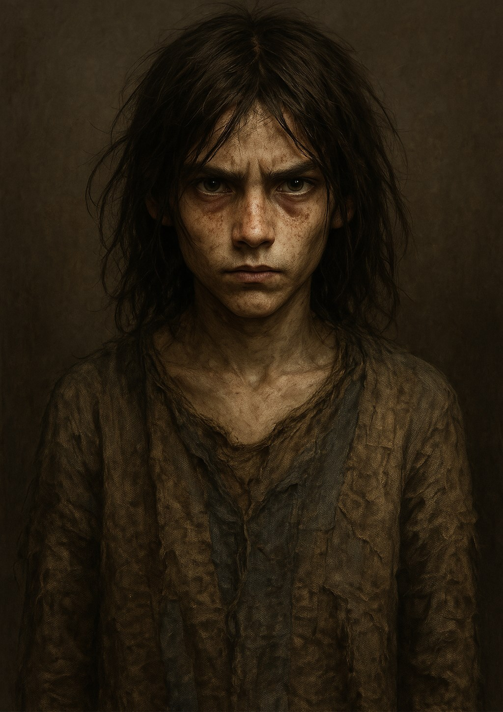
Jack Abbott
Protagonist
A resourceful young "tunnel rat" from a mining colony who discovers a way to escape his oppressive existence.
Full BiographyAggie
Deuteragonist
An artificial intelligence created by Dr. Agatha Locke, hidden in a damaged courier ship for decades and bound to Jack from the moment he finds her.
Full BiographyBook 1 — Stolen Freedom
First introduced in the mining colony and Jack's earliest steps beyond it.
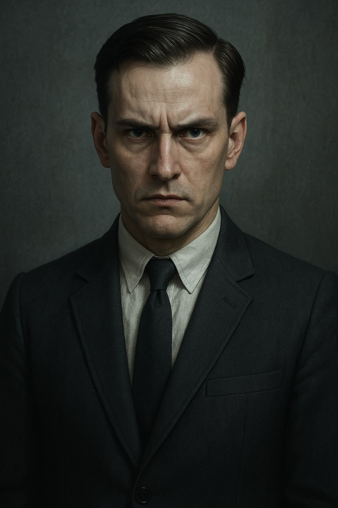
Victor Drayton
Antagonist
The cruel and paranoid foreman of the mining colony who rules through fear and brutality.
Full BiographyAlbert & Dorothy Abbott
Supporting Characters
Jack's parents, indentured workers whose love provides the only warmth in his harsh upbringing on the colony.
Full BiographyDock Officer Bartram
Supporting Character
A kind-hearted security officer at Horizon Outpost who helps Jack adjust to his new life beyond the mining colony.
Full BiographyBrinn
Supporting Character
An enthusiastic boy who becomes Jack's first friend at Horizon Outpost, introducing him to normal childhood experiences.
Full BiographyDr. Agatha Locke
Referenced Character
Aggie's brilliant creator who sacrificed herself to save her AI during an attack on Ethereal Intelligence.
Full Biography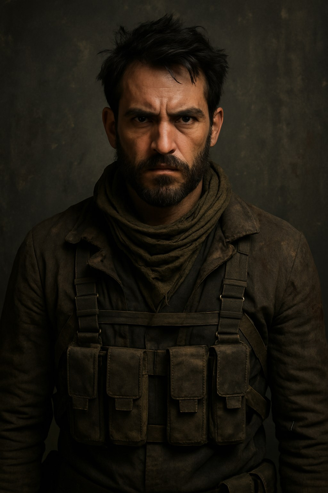
Gilbert
Minor Character
A resistance operative whose fate in the opening pages sets the entire story in motion.
Full BiographyBook 2 — Wings of Freedom
The pilots, fixers, and adversaries Jack meets once he reaches Horizon Outpost.
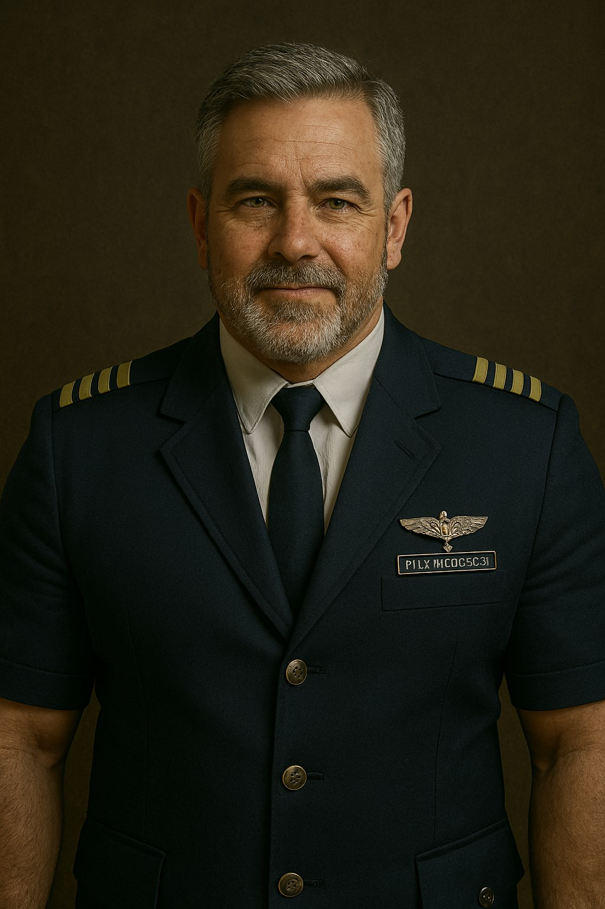
Captain Marcus Hale
Supporting Character
A stern but fair pilot instructor who recognises Jack's extraordinary talent and secretly nurtures it with advanced training.
Full Biography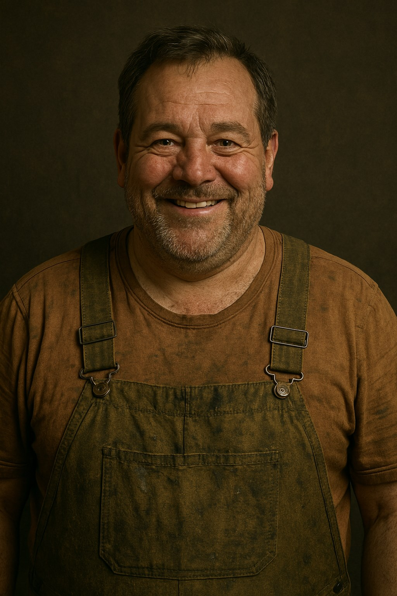
Foreman Oswald (Ozzy)
Supporting Character
The good-natured shipyard foreman who repairs Jack's ship, names it the Jackrabbit, and becomes a valuable ally at Horizon Outpost.
Full Biography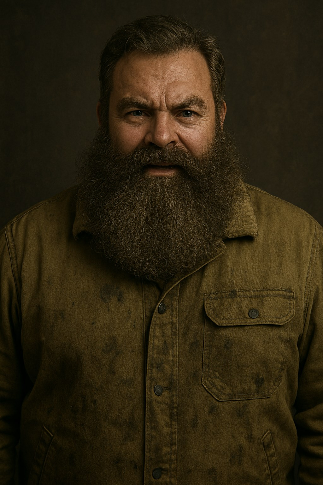
Burke
Supporting Character
A hulking engineer operating in Horizon Outpost's "grey areas" who provides Jack with illegal technology and valuable connections.
Full BiographyChas Drayton
Antagonist
An entitled, arrogant youth from a wealthy family who resents Jack's natural piloting abilities and constantly tries to undermine him.
Full BiographyVeronica Bennett
Supporting Character
A middle-aged woman who joins pilot training to understand her late son's passion for flying and develops a maternal bond with Jack.
Full Biography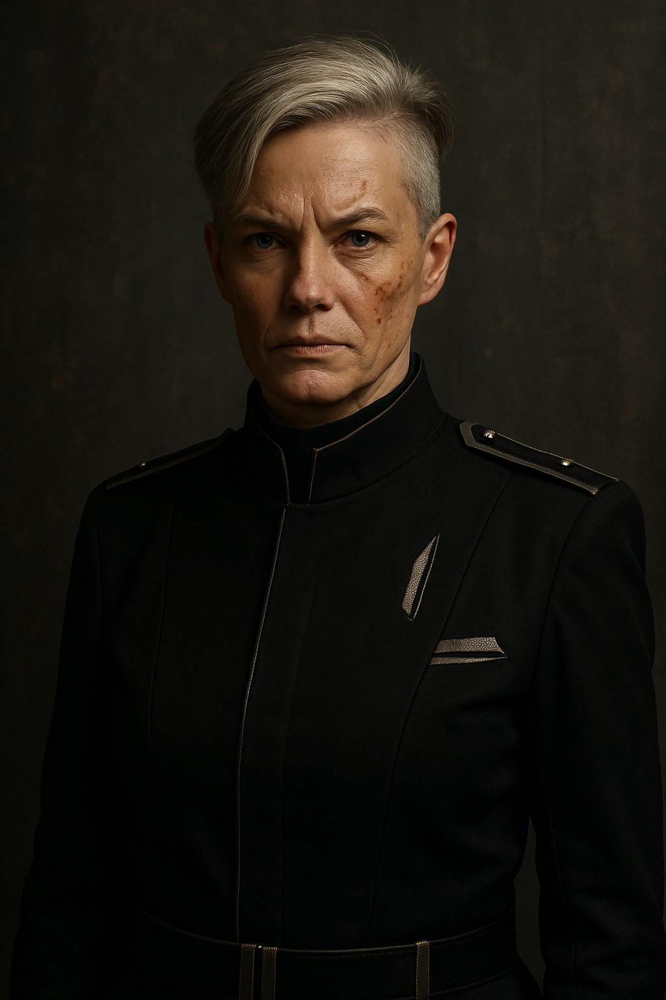
Commodore Razer
Supporting Character
A ruthless mercenary fleet commander whose pursuit of the Jackrabbit turns a simple courier run into a high-stakes chase.
Full BiographyBook 3 — The Jackrabbit Emerges
The stranded survivors, raiders, and corporate operators Jack encounters at the fractured Dyson Array and beyond.
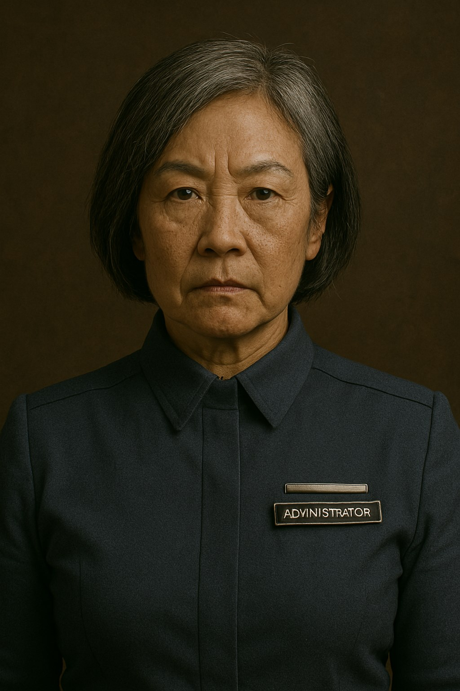
Administrator Mei Chen
Supporting Character
The stern, pragmatic leader of Fragment Alpha who maintains order and structure despite being abandoned by the corporation for three years.
Full Biography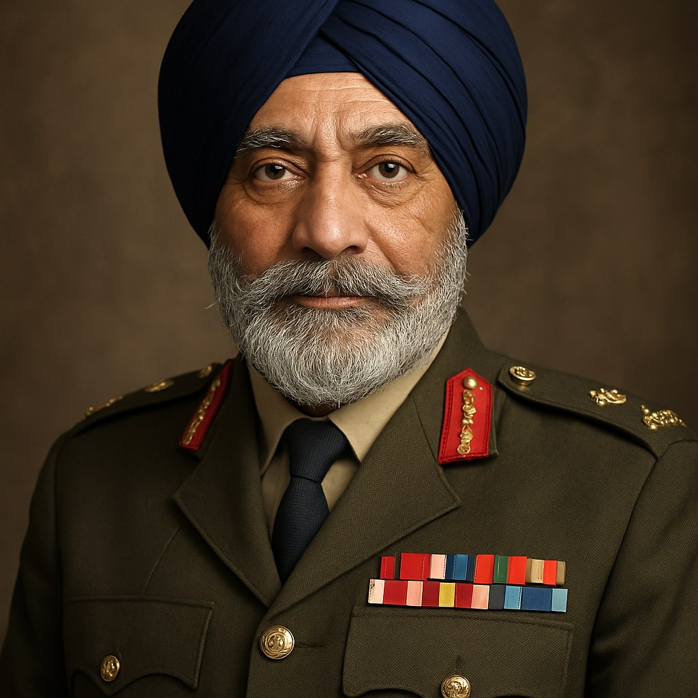
General Hardeep Singh
Supporting Character
The elderly but formidable military commander who oversees Fragment Alpha's defences and develops a particular fondness for Jack and his ship.
Full BiographyCommander Lucy Reeves
Supporting Character
Alpha's disciplined security chief, whose steady competence and quiet moral compass make her one of Jack's most dependable allies.
Full BiographyDr. Eli Vega
Supporting Character
A brilliant scientist whose pre-attack work on a classified project makes him central to the survivors' best hope of rescue.
Full Biography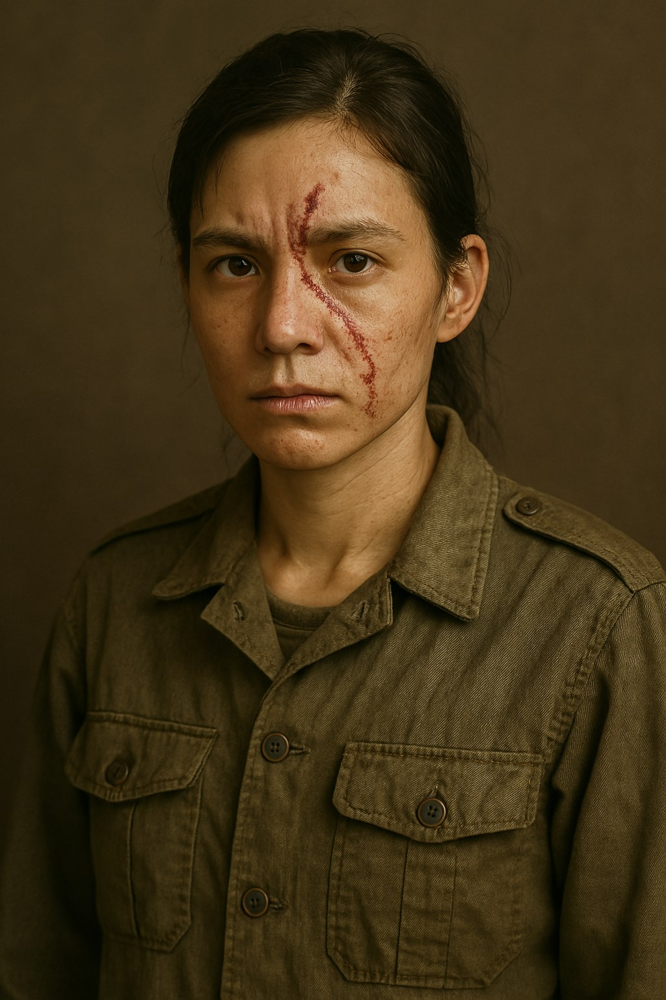
Commander Reika
Supporting Character
The scarred, neurologically-injured leader of the raiders, whose fraught command is defined by her rivalry with Krell and her attempts to reform her crew.
Full Biography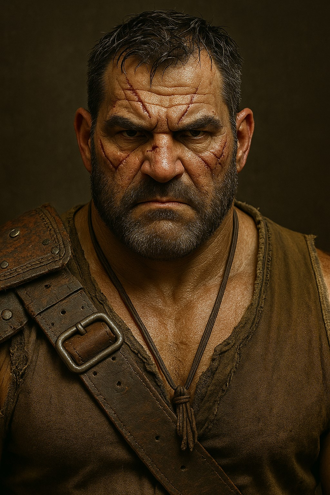
Krell
Antagonist
The violent former leader of the raiders, whose refusal to accept Reika's authority curdles into open hostility across the Array.
Full Biography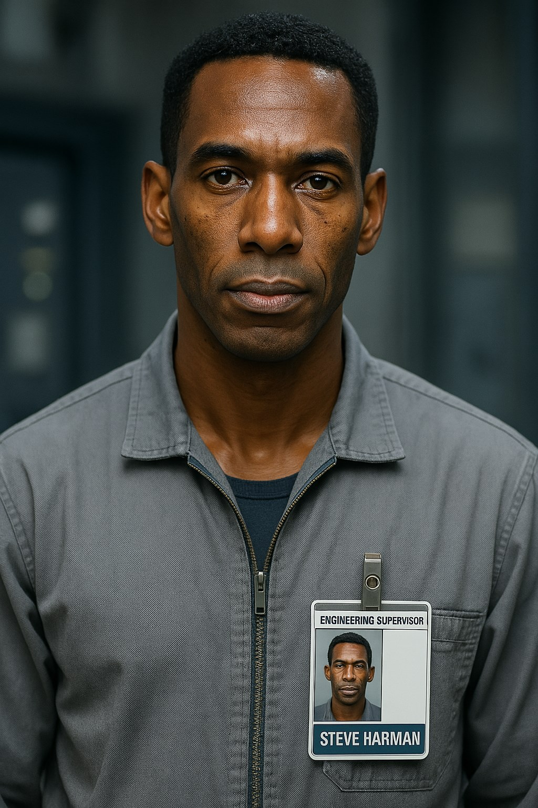
Steve Harman
Supporting Character
A former engineering supervisor on Fragment Omicron whose quiet decency puts him at odds with the fragment's harsher factional leadership.
Full Biography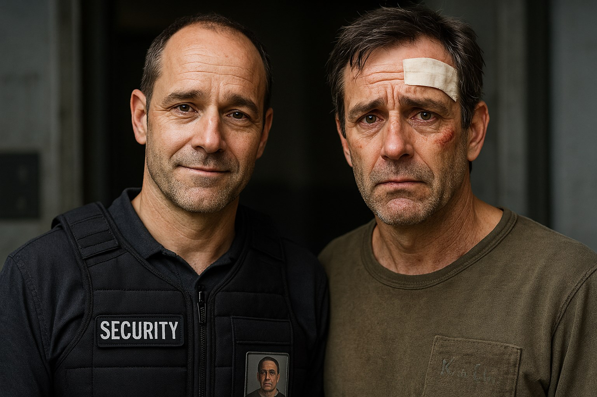
Thomas & Marcus
Supporting Characters
Long-term partners from Fragment Lambda whose devotion to one another stands as one of the Array's most enduring bonds.
Full Biography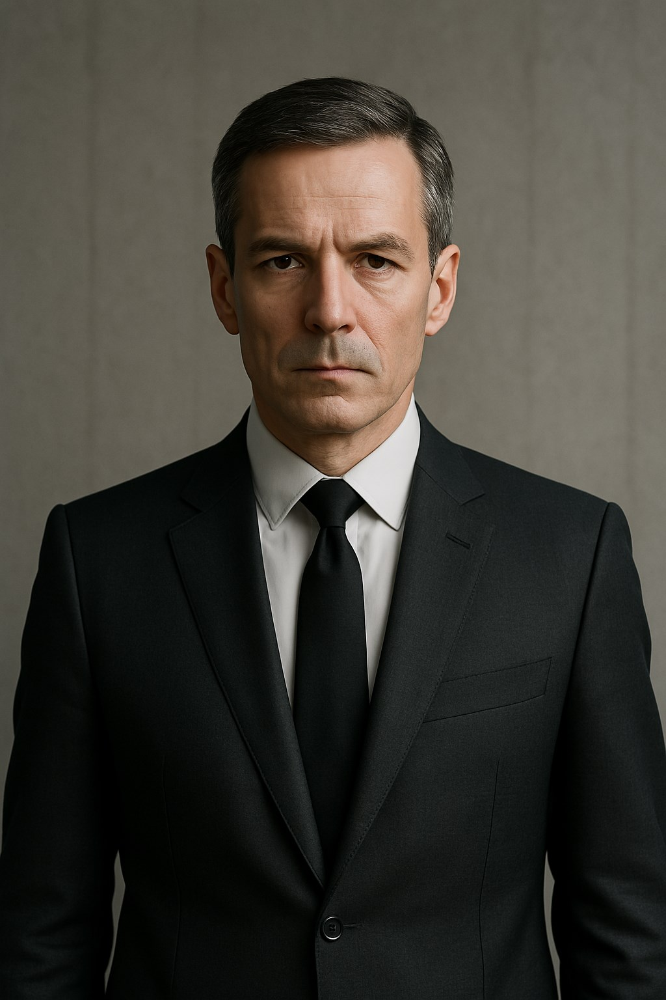
Mr. Grey
Antagonist
A calculating OmniFab executive who leads the corporation's efforts to locate and recover the Jackrabbit and its mysterious technology.
Full BiographyDirector Vera Santos
Antagonist
Head of OmniFab's Intelligence Division who first identified the statistical anomaly when mentions of "Jackrabbit" began appearing across sectors.
Full Biography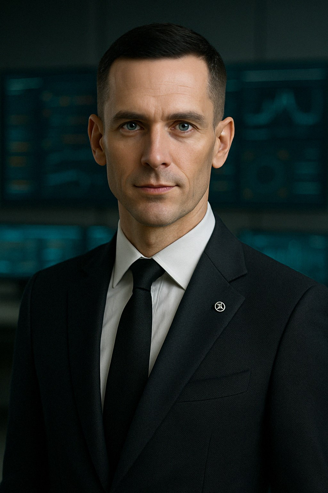
Mr. Mercury
Antagonist
AetherLink's enigmatic Executive Liaison who manipulates corporate negotiations to gain information about the Jackrabbit's autonomous capabilities.
Full BiographyMs. Blackwood
Antagonist
A senior QuantumGrid executive who aggressively investigates the loss of Halcyon Fields as an energy client, suspecting corporate sabotage.
Full BiographyAmondi Nkosi
Antagonist
An observant AetherLink junior analyst who takes seriously reports of a self-flying ship that others dismiss, leading him to Horizon Outpost.
Full Biography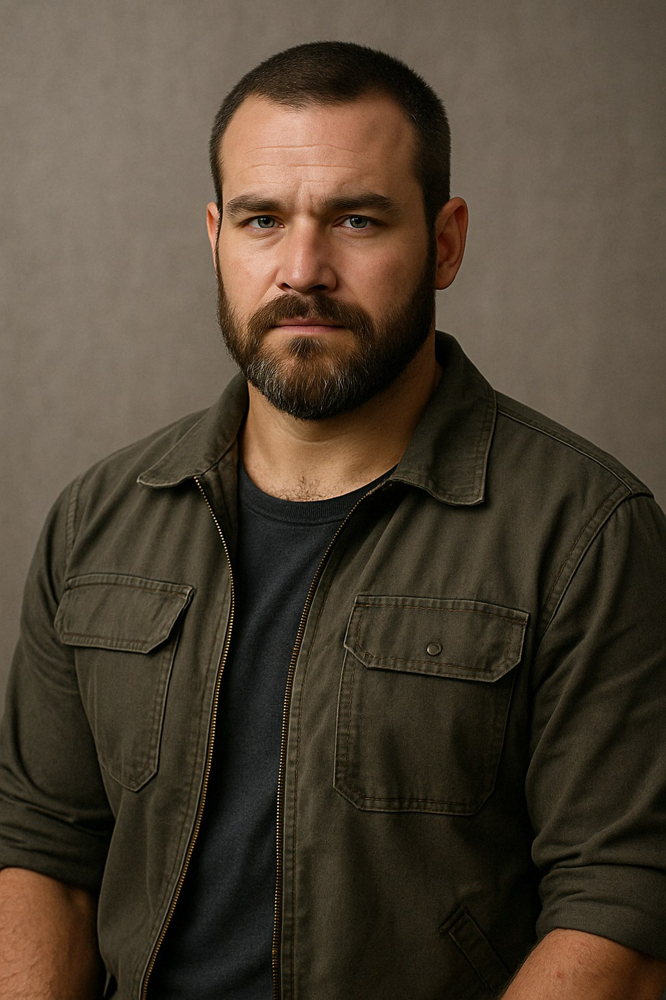
Decker
Supporting Character
Reika's trusted second-in-command, whose engineering know-how and reach across the raider community make him quietly indispensable.
Full BiographyDaniel
Supporting Character
A maintenance worker with Down Syndrome whose precise observations about the Jackrabbit's autonomous capabilities are dismissed by corporate investigators.
Full BiographyBook 4 — Coming of Age
The Kowalski family and the corporate machinery Jack navigates from the inside.
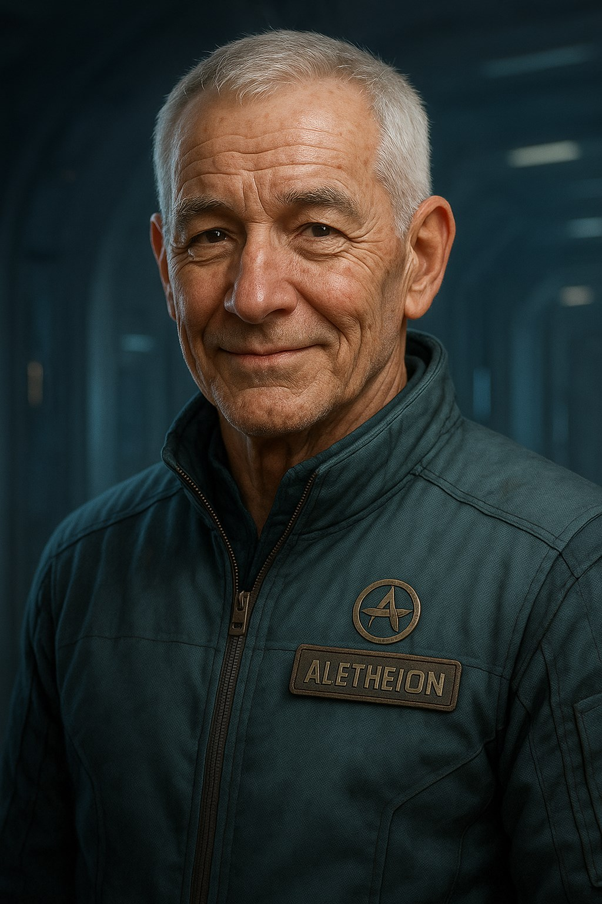
Frank Kowalski
Supporting Character
A veteran Aletheion courier who becomes Jack's mentor and father figure, guiding him through corporate politics with thirty-four years of experience.
Full BiographyAmanda Kowalski
Supporting Character
Frank's brilliant granddaughter, a CyberNexus researcher specialising in neural networks whose presence opens up a life Jack has never allowed himself to imagine.
Full BiographyEleanor Kowalski
Supporting Character
Frank's wife and Amanda's grandmother who provides maternal warmth and wisdom to Jack, helping him understand what it means to have a real family.
Full Biography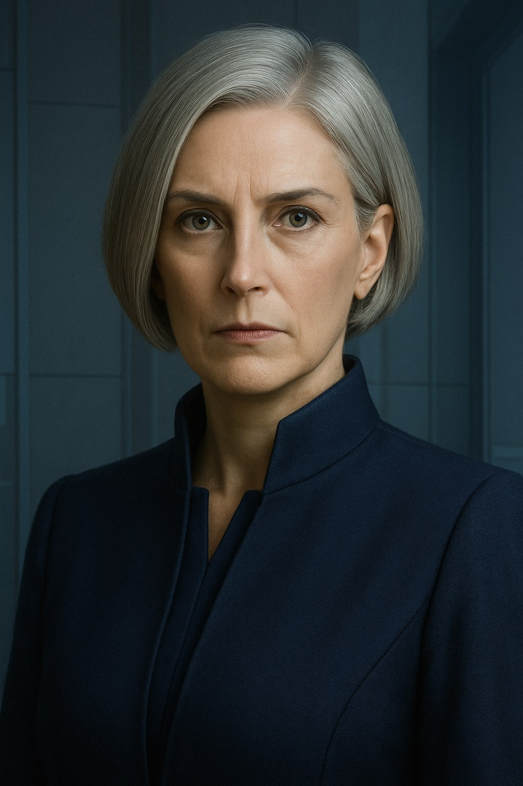
Katherine Keller
Antagonist
Executive Vice President of Aletheion Logistics, the cold face of corporate power whose attention on Jack is rarely a good sign.
Full Biography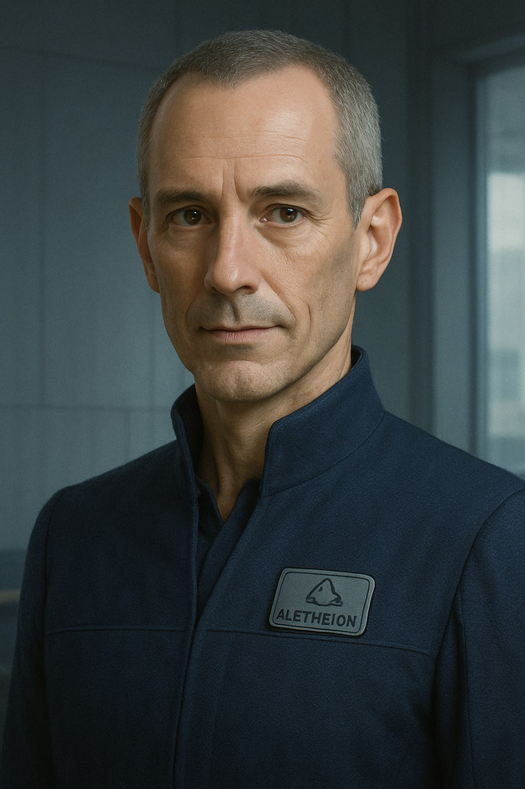
Director Halsey
Supporting Character
Jack's direct superior at Aletheion, whose professional interest in his rising courier sets much of Book 4's corporate plot in motion.
Full BiographyBook 5 — The Proliferation
The resistance community aboard Home and the figures who come into focus as the series draws to its climax.

Kevin Farage
Antagonist
A bitter maintenance worker whose rage against corporate injustice transforms into violent extremism under the influence of a psychotic delusion.
Full Biography
Andy
Supporting Character
The patient, pragmatic leader of the zero-gravity resistance aboard Home, carrying six generations of inherited purpose.
Full Biography
Pavan
Supporting Character
A sharp-minded resistance leader whose tactical thinking and scientific curiosity complement Andy's steady pragmatism.
Full Biography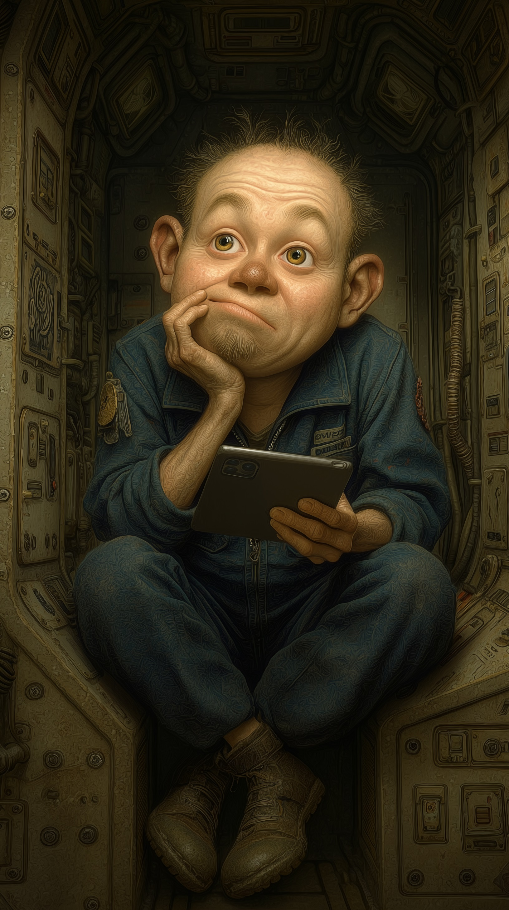
Heinz
Supporting Character
The engineering-minded resistance leader whose practical concerns ground the community's ambitions in physical reality.
Full Biography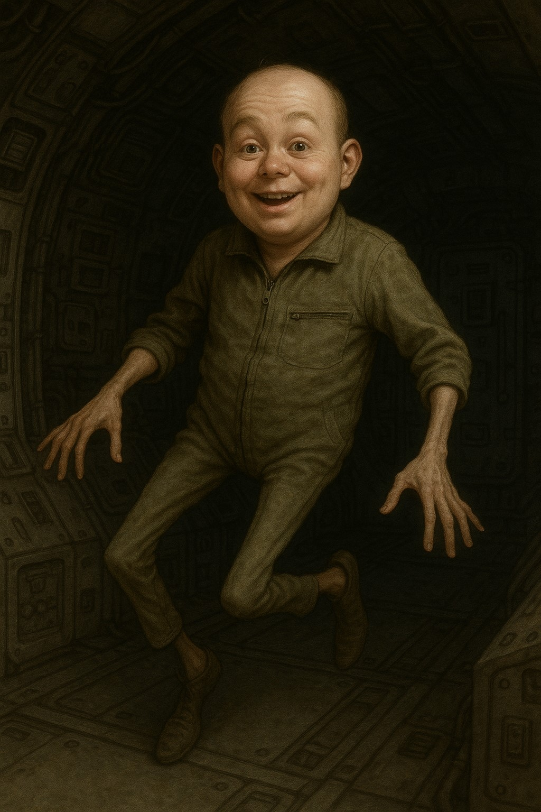
Avery
Supporting Character
The youngest member of Home's original community, whose irrepressible enthusiasm and quiet competence make him the heart of the ship.
Full BiographyKathy
Supporting Character
A resistance survivor from a dying outpost whose quiet resilience draws her into a role she never expected to take on.
Full Biography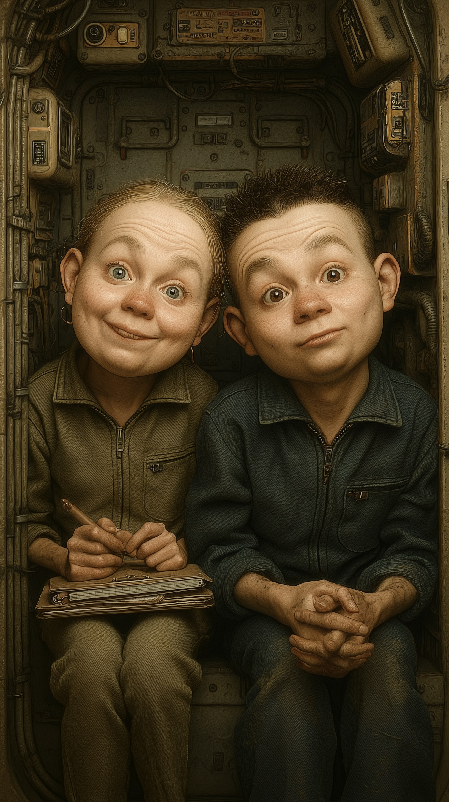
Clara & Seb
Supporting Characters
Home's young engineering duo, whose technical ingenuity and quiet determination underpin the community's most ambitious projects.
Full Biography